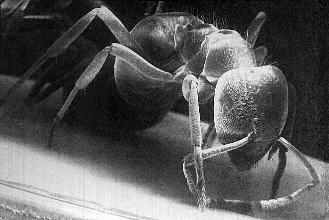

Welcome to the Ghostscript Bug Tracker. This system is based on Bugzilla, which was created by the Mozilla team.
But it all boils down to a choice of:
Query existing bug reports
Enter a new bug report
Get summary reports
Change password or user preferences
Logout someone@example.com